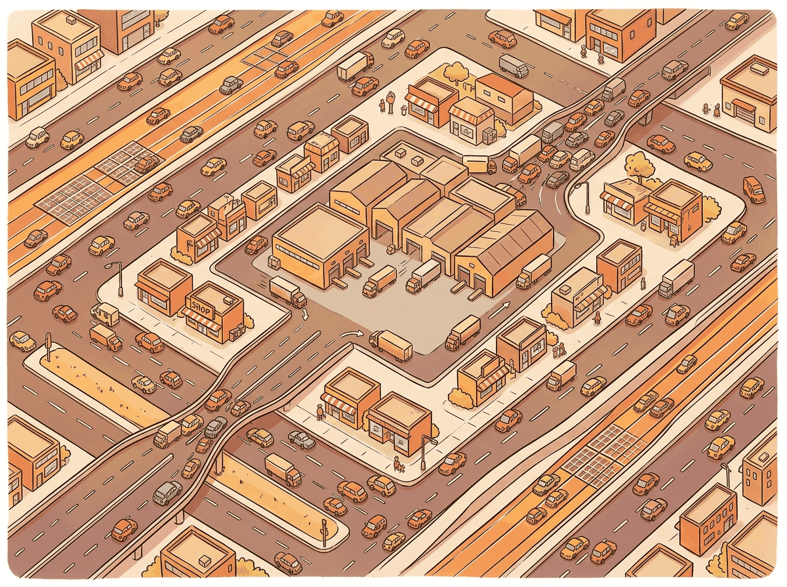

My GPU utilization hit 100% and for one beautiful moment, memory bandwidth and compute were perfectly balanced. Then I loaded the next batch.
Norm AI Agent
Prerequisites
This section assumes familiarity with the Transformer architecture from Section 4.1, especially the matrix operations involved in attention computation. The PyTorch foundations from Section 0.3 (tensors, device placement) are helpful. The hardware concepts here connect directly to inference optimization in Section 8.1 and distributed training in Section 6.3.

1. Why GPU Architecture Matters
A Transformer's theoretical FLOP count tells only half the story. Two implementations with identical FLOP counts can differ by 10x in wall-clock time depending on how well they utilize the GPU's memory hierarchy. Understanding GPU architecture is not optional for anyone who wants to train or serve LLMs efficiently. This section provides the mental model you need to reason about performance bottlenecks and understand optimizations like FlashAttention.
Modern GPUs are fundamentally throughput machines designed to keep thousands of cores busy simultaneously. The main challenge is not compute; it is feeding data to those cores fast enough. Most Transformer operations are memory-bound, meaning they spend more time moving data than computing with it. The PyTorch tensor foundations from Section 0.3 map directly onto these GPU primitives.
2. GPU Architecture Overview
2.1 Streaming Multiprocessors (SMs)
A GPU is organized as an array of Streaming Multiprocessors (SMs). Each SM contains:
- CUDA cores: Scalar arithmetic units for FP32/FP64/INT operations. An A100 has 6912 CUDA cores across 108 SMs.
- Tensor Cores: Specialized matrix multiply-accumulate units that process small matrix tiles (e.g., 16x16x16) in a single cycle. They provide the bulk of the compute for matrix multiplications in Transformers.
- Shared Memory / L1 Cache: Fast, programmer-controlled on-chip memory (up to 228 KB per SM on H100). This is the key resource for kernel optimization.
- Register File: The fastest storage, private to each thread. 256 KB per SM.
- Warp Schedulers: Each SM schedules 32-thread groups called "warps" in a round-robin fashion, hiding memory latency by switching between warps.
2.2 Memory Hierarchy
The bandwidth gap between shared memory (~19 TB/s) and HBM (~3.35 TB/s on H100) is roughly 6x. The gap between registers and HBM is even larger. This is why memory access patterns dominate GPU performance. An operation that reads the same data from HBM three times (like naive attention) can be 3x slower than one that reads it once and keeps it in shared memory (FlashAttention).
3. Compute-Bound vs. Memory-Bound Operations
3.1 The Roofline Model
The roofline model characterizes each operation by its arithmetic intensity: the ratio of FLOPs to bytes transferred from memory. If an operation does many FLOPs per byte loaded, it is compute-bound (limited by the number of arithmetic units). If it does few FLOPs per byte, it is memory-bound (limited by memory bandwidth).
| Operation | FLOPs | Memory | Intensity | Bound |
|---|---|---|---|---|
| Matrix multiply (large) | 2MNK | 2(MK + KN + MN) bytes | High (scales with dims) | Compute |
| LayerNorm | ~5T per element | Read + write all elements | ~2.5 | Memory |
| Softmax | ~5T per element | Read + write all elements | ~2.5 | Memory |
| Dropout | ~1 per element | Read + write all elements | ~0.5 | Memory |
| Element-wise add (residual) | 1 per element | Read 2 + write 1 | ~0.33 | Memory |
| Attention ($QK^{T}$ softmax V) | O($T^{2}$d) | O($T^{2}$) for attention matrix | Depends on T, d | Usually memory |
In a typical Transformer forward pass, the large matrix multiplications (QKV projections, FFN layers, output projection) are compute-bound and keep the GPU busy. But everything else (LayerNorm, softmax, dropout, residual adds, attention score computation for moderate sequence lengths) is memory-bound. This is why kernel fusion (combining multiple memory-bound operations into a single kernel) is so effective.
4. The FlashAttention Algorithm
FlashAttention computes the exact same result as naive attention but 2 to 4 times faster, simply by being smarter about memory access patterns. It is the computational equivalent of realizing you can grocery shop faster by organizing your list by aisle rather than alphabetically.
FlashAttention is the single most important GPU optimization for Transformers. It computes exact standard attention while reducing HBM reads/writes from O($T^{2}$) to O($T^{2}$d/M), where M is the size of on-chip SRAM. For typical values, this is a 5 to 10x reduction in memory traffic.
4.1 The Problem with Naive Attention
The standard attention implementation performs these steps, each reading from and writing to HBM:
- Compute
S = QKT / √d, write S to HBM. Size: O(T2). - Read S from HBM, apply mask, compute
P = softmax(S), write P to HBM. Size: O(T2). - Apply dropout to P, write back to HBM.
- Read P from HBM, compute
O = PV, write O to HBM.
The T × T matrices S and P are the bottleneck. For T=4096, d=128, each matrix is 64 MB in FP32 per head per batch element. With 32 heads and batch size 4, that is 8 GB just for the intermediate attention matrices.
4.2 The Tiling Approach
FlashAttention processes the attention computation in tiles. Instead of computing the full T × T attention matrix at once, it processes blocks of size $B_{r}$ × $B_{c}$ that fit in SRAM. The challenge is computing the softmax correctly when you only see part of each row at a time.
Online Softmax
The critical algorithmic trick is online softmax: computing the softmax incrementally as new blocks arrive. For a row of attention scores being computed in blocks, the algorithm maintains running statistics (the current maximum and the running sum of exponentials) and rescales previous partial results as new maxima are discovered: Code Fragment 4.4.1 below puts this into practice.
# Pseudocode: Online softmax for FlashAttention
# Processing one row of the attention matrix in blocks
max_so_far = -infinity
sum_exp = 0
output_accumulator = zeros(d_v)
for each block j of keys/values:
# Compute attention scores for this block
scores_j = query @ keys_block_j.T / sqrt(d_k)
# Update running max
new_max = max(max_so_far, max(scores_j))
# Rescale previous accumulator with correction factor
correction = exp(max_so_far - new_max)
sum_exp = sum_exp * correction + sum(exp(scores_j - new_max))
output_accumulator = output_accumulator * correction + exp(scores_j - new_max) @ values_block_j
max_so_far = new_max
# Final normalization
output = output_accumulator / sum_exp
This is numerically equivalent to computing the full softmax but requires only O(B) SRAM at any point, rather than the full O(T) row. The correction factor ensures that as we discover larger values, all previous exponentials are rescaled consistently.
Input: Q, K, V matrices in HBM; tile sizes Br, Bc fitting in SRAM
Output: O = softmax(QKT / √dk) V, written to HBM
// Partition Q into T/Br row blocks, K and V into T/Bc column blocks
for each Q block Qi (rows i*Br to (i+1)*Br):
Load Qi from HBM to SRAM
Initialize: Oi = 0, li = 0, mi = −∞
// l = running sum of exponentials, m = running row-wise max
for each K,V block (Kj, Vj):
Load Kj, Vj from HBM to SRAM
Sij = Qi KjT / √dk // computed in SRAM
mnew = max(mi, rowmax(Sij))
Pij = exp(Sij − mnew)
// Rescale previous accumulator for updated max
α = exp(mi − mnew)
li = α ⋅ li + rowsum(Pij)
Oi = α ⋅ Oi + Pij Vj
mi = mnew
Oi = Oi / li // final normalization
Write Oi to HBM
return O
The key insight: Q, K, V are each read from HBM once per outer loop iteration, and the T × T attention matrix is never materialized in HBM. Total HBM access is O($T^{2}$d2/M) instead of O($T^{2}$ + Td), where M is SRAM size. This is where the 2 to 4x speedup comes from.
5. Introduction to Triton
Writing GPU kernels in CUDA requires managing threads, warps, shared memory, synchronization, and memory coalescing at a low level. Triton (developed at OpenAI) provides a higher-level abstraction: you write kernels in a Python-like language that operates on blocks of data rather than individual threads. Triton handles the complex details of thread mapping, shared memory management, and memory coalescing automatically. Code Fragment 4.4.2 below puts this into practice.
5.1 A Simple Example: Vector Addition
# implement add_kernel, triton_add
# See inline comments for step-by-step details.
import triton
import triton.language as tl
@triton.jit
def add_kernel(
x_ptr, y_ptr, output_ptr,
n_elements,
BLOCK_SIZE: tl.constexpr,
):
# Each program instance handles BLOCK_SIZE elements
pid = tl.program_id(axis=0)
block_start = pid * BLOCK_SIZE
offsets = block_start + tl.arange(0, BLOCK_SIZE)
# Mask to handle the case where n_elements is not a multiple of BLOCK_SIZE
mask = offsets < n_elements
# Load, compute, store
x = tl.load(x_ptr + offsets, mask=mask)
y = tl.load(y_ptr + offsets, mask=mask)
output = x + y
tl.store(output_ptr + offsets, output, mask=mask)
def triton_add(x, y):
output = torch.empty_like(x)
n_elements = x.numel()
BLOCK_SIZE = 1024
# Launch kernel with enough program instances
grid = (triton.cdiv(n_elements, BLOCK_SIZE),)
add_kernel[grid](x, y, output, n_elements, BLOCK_SIZE)
return output
Notice: no thread management, no shared memory allocation, no warp-level operations. Triton programs are specified in terms of program instances that each process a block of elements. The compiler handles the mapping to GPU hardware.
5.2 Lab: Fused Softmax in Triton
Implementing softmax as a fused kernel eliminates the need for multiple HBM round-trips. In a naive implementation, computing softmax requires three passes over the data: one to find the max, one to compute exponentials and their sum, and one to normalize. A fused kernel does all three in a single pass through the data in SRAM.
# implement softmax_kernel, fused_softmax
# Key operations: softmax normalization
@triton.jit
def softmax_kernel(
output_ptr, input_ptr,
input_row_stride, output_row_stride,
n_cols,
BLOCK_SIZE: tl.constexpr,
):
"""Fused softmax: one kernel, one pass through HBM per row."""
# Each program handles one row
row_idx = tl.program_id(0)
row_start_ptr = input_ptr + row_idx * input_row_stride
# Load the row into SRAM
col_offsets = tl.arange(0, BLOCK_SIZE)
mask = col_offsets < n_cols
row = tl.load(row_start_ptr + col_offsets, mask=mask, other=float('-inf'))
# Compute softmax entirely in SRAM
# Step 1: Subtract max for numerical stability
row_max = tl.max(row, axis=0)
row = row - row_max
# Step 2: Exponentiate
numerator = tl.exp(row)
# Step 3: Normalize
denominator = tl.sum(numerator, axis=0)
softmax_output = numerator / denominator
# Write back to HBM
output_row_start_ptr = output_ptr + row_idx * output_row_stride
tl.store(output_row_start_ptr + col_offsets, softmax_output, mask=mask)
def fused_softmax(x):
"""Apply softmax to each row of x using a fused Triton kernel."""
n_rows, n_cols = x.shape
# BLOCK_SIZE must be a power of 2 >= n_cols
BLOCK_SIZE = triton.next_power_of_2(n_cols)
output = torch.empty_like(x)
softmax_kernel[(n_rows,)](
output, x,
x.stride(0), output.stride(0),
n_cols,
BLOCK_SIZE=BLOCK_SIZE,
)
return output
This fused kernel reads each row from HBM exactly once, performs the entire softmax in SRAM, and
writes the result back once. The naive PyTorch implementation (torch.softmax) may
require multiple reads and writes for the intermediate max and sum computations. On an A100, a fused
softmax kernel can be 2 to 4x faster than the PyTorch default for typical Transformer shapes.
6. Key GPU Metrics for LLM Practitioners
| GPU | HBM Capacity | HBM Bandwidth | FP16 TFLOPs | TF32 TFLOPs |
|---|---|---|---|---|
| A100 (80GB) | 80 GB | 2.0 TB/s | 312 | 156 |
| H100 SXM | 80 GB | 3.35 TB/s | 990 | 495 |
| H200 | 141 GB | 4.8 TB/s | 990 | 495 |
| B200 | 192 GB | 8.0 TB/s | 2250 | 1125 |
MFU measures what fraction of the GPU's theoretical peak FLOPS your training run actually achieves. Good Transformer training typically reaches 40% to 60% MFU. Reaching above 60% is excellent. Values below 30% usually indicate a bottleneck (memory-bound operations, communication overhead, or poor batch size selection). The Chinchilla paper reported ~57% MFU for their training runs.
7. Practical Considerations
7.1 Mixed Precision Training
Modern LLM training uses mixed precision: forward and backward passes use FP16 or BF16, while the master weights and optimizer states are kept in FP32. BF16 is preferred because it has the same exponent range as FP32 (avoiding overflow) but lower precision (8 vs. 23 mantissa bits). BF16 Tensor Core operations are natively supported on A100 and later GPUs.
7.2 Memory Budgeting
Training a Transformer model requires storing: (1) model parameters, (2) optimizer states (Adam stores momentum and variance, tripling the parameter memory), (3) gradients, and (4) activations (for the backward pass). The dominant cost for large models is often optimizer states. For a 7B parameter model in mixed precision:
- Parameters: 7B × 2 bytes (BF16) = 14 GB
- Optimizer (AdamW): 7B × 4 bytes × 2 states = 56 GB
- Gradients: 7B × 2 bytes = 14 GB
- Activations: Variable, depends on batch size and sequence length
- Total minimum: ~84 GB (before activations)
This is why training a 7B model requires multiple GPUs even when the model parameters alone would fit on a single 80 GB GPU. Techniques like ZeRO (distributed optimizer states), gradient checkpointing (recomputing activations instead of storing them), and offloading help manage this memory pressure. We cover distributed training strategies in Section 6.6 and inference-time memory optimization (including quantization) in Chapter 8.
A team running Llama 2 7B inference on an A100 GPU noticed throughput was lower than expected. Using torch.profiler, they found that 68% of GPU time was spent on memory-bound operations (layer normalization, residual additions, and softmax), not the matrix multiplications. By switching to FlashAttention and fusing the layer norm with the subsequent linear projection using a custom Triton kernel, they reduced per-token latency from 12 ms to 7 ms, a 42% improvement, without changing the model itself. The key lesson: profiling the roofline characteristics of each operation, rather than optimizing blindly, directs engineering effort to where it matters most.
Pre-norm (LayerNorm before attention) and post-norm (after attention) give different training dynamics. Most modern LLMs use pre-norm for stability. If you are reproducing a paper, check which variant they used; swapping them silently degrades performance.
The dominance of memory bandwidth over compute capacity in LLM inference is not an engineering oversight; it reflects a fundamental physical constraint. The speed of light limits how fast data can travel between memory chips and processing units, and the energy required to move a bit of data across a chip is now 10 to 100 times greater than the energy to perform a floating-point operation on it. This "memory wall" was predicted by Wulf and McKee in 1995, and it has only widened since. FlashAttention's brilliance lies in recognizing that the bottleneck is data movement, not computation, and restructuring the algorithm to minimize it. This principle generalizes far beyond attention: across all of computing, from databases to scientific simulations to neural networks, the dominant cost is increasingly data movement rather than arithmetic. Understanding this physical reality explains why algorithmic improvements (like FlashAttention's tiling strategy) can yield 2 to 4x speedups without changing the mathematical result, and why hardware innovations like high-bandwidth memory, near-memory computing, and in-memory processing are central to the future of AI acceleration.
Key Takeaways
- GPU performance is dominated by memory bandwidth, not compute, for most Transformer operations.
- The memory hierarchy (registers, shared memory, L2, HBM) spans 4 orders of magnitude in bandwidth. Keeping data in fast levels is the key to performance.
- FlashAttention computes exact attention while keeping the attention matrix in SRAM, reducing HBM traffic by 5 to 10x.
- The roofline model classifies operations as compute-bound or memory-bound based on arithmetic intensity.
- Triton provides a high-level way to write GPU kernels, operating on blocks of data rather than individual threads.
- Kernel fusion (combining multiple memory-bound operations) is one of the most effective optimization strategies.
- Training a 7B model requires ~84 GB minimum memory, necessitating multi-GPU setups and memory optimization techniques.
Check Your Understanding
1. Why is standard attention considered memory-bound rather than compute-bound?
Show Answer
2. What is the "online softmax" trick and why is it needed for FlashAttention?
Show Answer
3. Why does mixed precision training use BF16 rather than FP16?
Show Answer
4. A GPU has 3.35 TB/s HBM bandwidth and 990 TFLOPS of FP16 compute. What is the arithmetic intensity threshold for an operation to be compute-bound?
Show Answer
5. Why does training a 7B parameter model require much more than 14 GB of GPU memory?
Show Answer
Hardware-software co-design is accelerating. NVIDIA's Blackwell (B200/GB200) GPUs introduce a second-generation Transformer Engine with FP4 support, doubling effective throughput for inference. Google's TPU v5p and AMD's MI300X offer competitive alternatives. On the software side, Triton (OpenAI, 2024) enables researchers to write custom GPU kernels in Python, dramatically lowering the barrier to hardware optimization. ThunderKittens (Stanford, 2024) provides even higher-level abstractions for attention kernels. Disaggregated inference architectures (separating prefill and decode across different GPU pools) are emerging as a key pattern for cost-efficient LLM serving, as explored in Section 8.1.
What's Next?
In the next section, Section 4.5: Transformer Expressiveness Theory, we explore the theoretical expressiveness of Transformers, understanding what these models can and cannot compute.